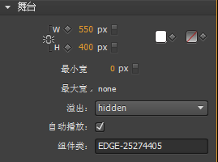

帧动画滑屏工具说明
步骤：
1.新建一个文件夹，将生成的文件都放在文件夹内。
2.双击index.html文件，将在浏览器看到预览。
3.如需修改，请重新输入，将生成的文件覆盖上次生成的。
注意：
1.在制作Adobe Edge动画的过程中，每一个动画的W(宽)、H(高)、最小宽、最大宽、溢出都需要保持一致，否则会导致滑屏过程中动画宽高互相影响。
2.动画制作过程中“组件类”不能修改为其他值，请保持默认。

3.生成的动画文件夹里面，确保图片都在images文件夹，媒体文件都在media文件夹内，否则，重新在Adobe Edge里面插入图片。
不在images和media里面的图片和内容，将不可见。
4.保存动画时，每个动画保存的名字不可重复。
5.填写每一帧的图片和动画声音路径请确保正确，不需要加上图片和动画声音文件名。例如：
"http://img.bumps.com/frameimg/"
如果选择上传文件，则不需要填写。
6.“调用html”、“帧js”、“帧动画js”这几个选项需要输入完整的文件内容，请检查确认。